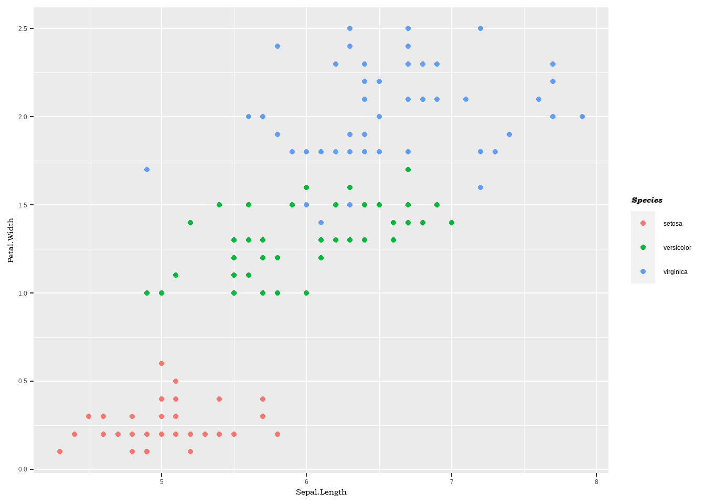
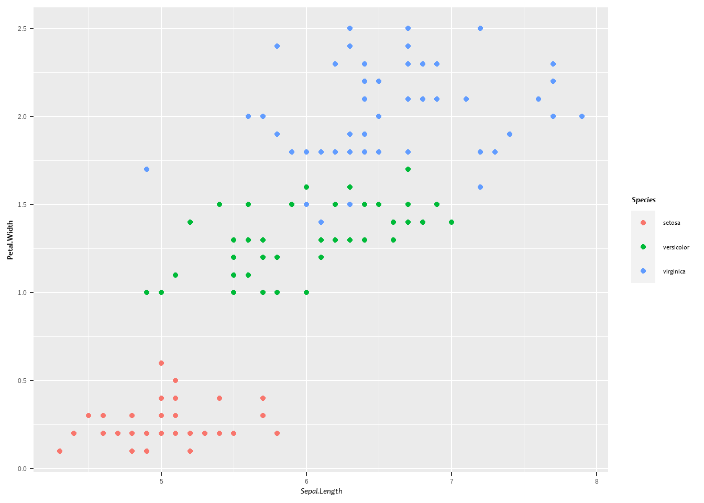
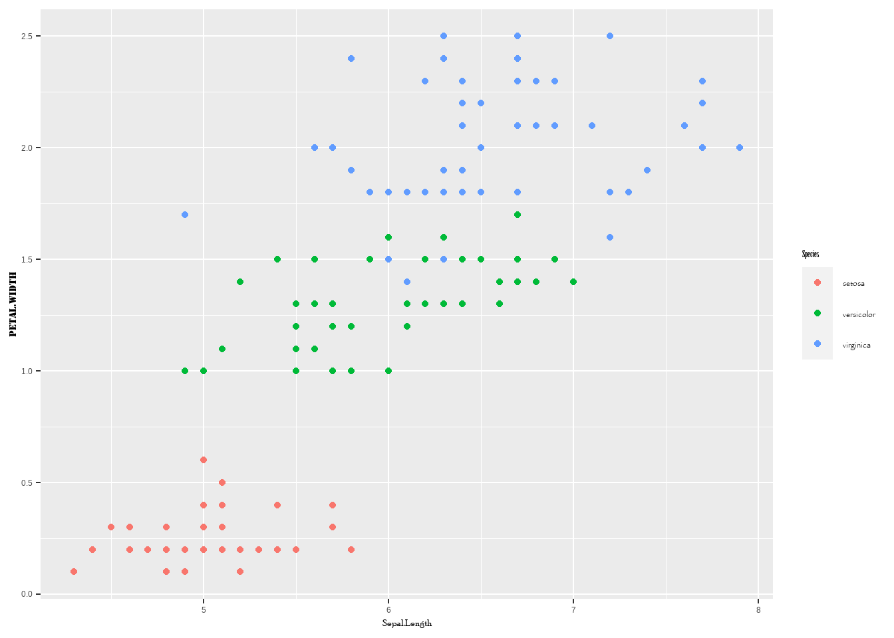

knitr::opts_knit$set(root.dir = rprojroot::find_rstudio_root_file())Fonts
Using knitr::inline_expr(r message = FALSE, warning = FALSE) hopefully stops it printing all the package messages
library(tidyverse) # Overkill, but easier than picking and choosingThese are mostly little plot tweaks and small things that I find and forget all the time.
Accessing fonts
In the past, I’ve used extrafonts to use fonts within figures, but it’s failing for me (‘No FontName, skipping’ error as in https://github.com/wch/extrafont/issues/88).
Try sysfonts. Actually, showtext on top of sysfonts. First, look at how it finds the fonts.
library(showtext)Warning: package 'showtext' was built under R version 4.2.2Loading required package: sysfontsWarning: package 'sysfonts' was built under R version 4.2.2Loading required package: showtextdbWarning: package 'showtextdb' was built under R version 4.2.2fontsIhave <- font_files()
fontsIhavestr(fontsIhave)'data.frame': 349 obs. of 6 variables:
$ path : chr "C:/Windows/Fonts" "C:/Windows/Fonts" "C:/Windows/Fonts" "C:/Windows/Fonts" ...
$ file : chr "AGENCYB.TTF" "AGENCYR.TTF" "ALGER.TTF" "ANTQUAB.TTF" ...
$ family : chr "Agency FB" "Agency FB" "Algerian" "Book Antiqua" ...
$ face : chr "Bold" "Regular" "Regular" "Bold" ...
$ version: chr "Version 1.01" "Version 1.01" "Version 1.57" "Version 2.35" ...
$ ps_name: chr "AgencyFB-Bold" "AgencyFB-Reg" "Algerian" "BookAntiqua-Bold" ...I should be able to use font_add
First, what fonts are CURRENTLY available in R?
windowsFonts()$serif
[1] "TT Times New Roman"
$sans
[1] "TT Arial"
$mono
[1] "TT Courier New"font_families()[1] "sans" "serif" "mono" "wqy-microhei"Test with one of the
font_add('Bookman Old Style', regular = 'BOOKOS.TTF',
italic = 'BOOKOSI.TTF',
bold = 'BOOKOSB.TTF',
bolditalic = 'BOOKOSBI.TTF')
windowsFonts()$serif
[1] "TT Times New Roman"
$sans
[1] "TT Arial"
$mono
[1] "TT Courier New"font_families()[1] "sans" "serif" "mono"
[4] "wqy-microhei" "Bookman Old Style"I’m not quite understanding how this object is organised. What is that last line? are the $xxxx the defaults?
To test, let’s make a plot and try to change font.
The help (https://cran.rstudio.com/web/packages/showtext/vignettes/introduction.html) says we need to tell R to use showtext for text.
showtext_auto()baseiris <- ggplot(iris, aes(x = Sepal.Length, y = Petal.Width, color = Species)) +
geom_point()
baseiris + theme(axis.title = element_text(family = 'Bookman Old Style'),
legend.title = element_text(family = 'Bookman Old Style', face = 'bold.italic'))
That seems to work. Can I feed in all the fonts on my system automaticallly? Is that a bad idea? Might be if it takes a while and we only want one.
First, though, can I give it a font name as a character and it load all of the faces automatically?
Note: some of the fonts I have have weird faces. For now, just fail on those and stick with the ones supported by showtext. That should be fine.
unique(fontsIhave$face) [1] "Bold" "Regular" "Bold Italic" "Italic"
[5] "Demibold" "Demibold Italic" "Demibold Roman" "Bold Oblique"
[9] "Oblique" "Light" This is a) a useful thing to simplify adding single fonts, and b) precursor to loading them all.
# chosen more or less at random for testing
familyname <- 'Candara'
# I could use dplyr but this seems better to just use base logical indexing.
# fontsIhave %>%
# filter(family == familyname & face == 'Regular') %>%
# select(file) %>%
# pull()
# Could do all the indexing in the function call to font_add(), but it just gets ridiculous
regfile <- fontsIhave[which(fontsIhave$family == familyname &
fontsIhave$face == 'Regular'), 'file']
italfile <- fontsIhave[which(fontsIhave$family == familyname &
fontsIhave$face == 'Italic'), 'file']
boldfile <- fontsIhave[which(fontsIhave$family == familyname &
fontsIhave$face == 'Bold'), 'file']
bifile <- fontsIhave[which(fontsIhave$family == familyname &
fontsIhave$face == 'Bold Italic'), 'file']
# NEED TO TEST WHEN THE FACE DOESN'T EXIST AND THROW NULL
# If not there, the value will be character(0). testing for that and returning NULL (which is what the function needs) is a bit tricky:
noface <- function(x) {ifelse(rlang::is_empty(x), return(NULL), return(x))}
font_add(familyname,
regular = noface(regfile),
italic = noface(italfile),
bold = noface(boldfile),
bolditalic = noface(bifile))Test that with a figure
baseiris + theme(axis.title.x = element_text(family = familyname, face = 'italic'),
axis.title.y = element_text(family = familyname, face = 'bold'),
legend.text = element_text(family = familyname),
legend.title = element_text(family = familyname, face = 'bold.italic'))
How bad an idea is it to just read them ALL in at once?
Easy enough to feed the font_add above in a loop. Probably vectorizable too, but why bother?
Write it as a function, then it will work for all fonts or a subset if that’s a bad idea. Either feed it a dataframe of fonts or just use font_files() directly. It can also take NULL for fontvec, in which case it loads all the fonts.
loadfonts <- function(fontvec = NULL, fontframe = NULL) {
# Get all fonts if no fontframe
if (is.null(fontframe)) {
fontframe <- font_files()
}
# Load all fonts if no fontvec
if (is.null(fontvec)) {
fontvec <- unique(fontframe$family)
}
# Loop over the font families
for (i in 1:length(fontvec)) {
familyname <- fontvec[i]
regfile <- fontframe[which(fontframe$family == familyname &
fontframe$face == 'Regular'), 'file']
italfile <- fontframe[which(fontframe$family == familyname &
fontframe$face == 'Italic'), 'file']
boldfile <- fontframe[which(fontframe$family == familyname &
fontframe$face == 'Bold'), 'file']
bifile <- fontframe[which(fontframe$family == familyname &
fontframe$face == 'Bold Italic'), 'file']
## TODO: THROW A TRYCATCH ON HERE TO BYPASS AND ALERT FOR FAILURES
# For example, Berlin Sans FB Demi has no 'regular' and so fails. let's just skip those, this isn't supposed to be the most robust thing ever that handles all cases flawlessly.
try(font_add(fontvec[i],
regular = noface(regfile),
italic = noface(italfile),
bold = noface(boldfile),
bolditalic = noface(bifile)))
# To avoid unforeseen carryover through the loop
rm(familyname, regfile, italfile, boldfile, bifile)
}
}Let’s try just reading everything in. Use try in the function above because there are failures for a few reasons, and instead of dealing with them I just want to quickly read in what’s easy to read in. I don’t have a ton of interest here in figuring out corner cases for weird fonts.
Test the function with a vector of fontnames first, because can’t do that after try with everything
loadfonts(fontvec = c('Consolas', 'Comic Sans MS', 'Tahoma'))
font_families()[1] "sans" "serif" "mono"
[4] "wqy-microhei" "Bookman Old Style" "Candara"
[7] "Consolas" "Comic Sans MS" "Tahoma" Now, go for it with everything. There are a million errors, so I’ve turned error reporting off for this code chunk.
system.time(loadfonts())That was pretty quick. What do I have?
font_families() [1] "sans" "serif"
[3] "mono" "wqy-microhei"
[5] "Bookman Old Style" "Candara"
[7] "Consolas" "Comic Sans MS"
[9] "Tahoma" "Agency FB"
[11] "Algerian" "Book Antiqua"
[13] "Arial" "Arial Narrow"
[15] "Arial Black" "Arial Rounded MT Bold"
[17] "Bahnschrift" "Baskerville Old Face"
[19] "Bauhaus 93" "Bell MT"
[21] "Bernard MT Condensed" "Bodoni MT"
[23] "Bodoni MT Black" "Bodoni MT Condensed"
[25] "Bodoni MT Poster Compressed" "Bradley Hand ITC"
[27] "Britannic Bold" "Berlin Sans FB"
[29] "Broadway" "Bookshelf Symbol 7"
[31] "Calibri" "Calibri Light"
[33] "Californian FB" "Calisto MT"
[35] "Cambria" "Candara Light"
[37] "Cascadia Code" "Cascadia Mono"
[39] "Castellar" "Century Schoolbook"
[41] "Centaur" "Century"
[43] "Chiller" "Colonna MT"
[45] "Constantia" "Cooper Black"
[47] "Copperplate Gothic Bold" "Copperplate Gothic Light"
[49] "Corbel" "Corbel Light"
[51] "Courier New" "Curlz MT"
[53] "Dubai" "Dubai Light"
[55] "Dubai Medium" "Ebrima"
[57] "Elephant" "Engravers MT"
[59] "Eras Bold ITC" "Eras Demi ITC"
[61] "Eras Light ITC" "Eras Medium ITC"
[63] "Felix Titling" "Forte"
[65] "Franklin Gothic Book" "Franklin Gothic Demi"
[67] "Franklin Gothic Demi Cond" "Franklin Gothic Heavy"
[69] "Franklin Gothic Medium" "Franklin Gothic Medium Cond"
[71] "Freestyle Script" "French Script MT"
[73] "Footlight MT Light" "Gabriola"
[75] "Gadugi" "Garamond"
[77] "Georgia" "Gigi"
[79] "Gill Sans MT" "Gill Sans MT Condensed"
[81] "Gill Sans Ultra Bold Condensed" "Gill Sans Ultra Bold"
[83] "Gloucester MT Extra Condensed" "Gill Sans MT Ext Condensed Bold"
[85] "Century Gothic" "Goudy Old Style"
[87] "Goudy Stout" "Harrington"
[89] "Haettenschweiler" "Microsoft Himalaya"
[91] "HoloLens MDL2 Assets" "HP Simplified"
[93] "HP Simplified Light" "HP Simplified Hans Light"
[95] "HP Simplified Hans" "HP Simplified Jpan Light"
[97] "HP Simplified Jpan" "High Tower Text"
[99] "Impact" "Imprint MT Shadow"
[101] "Informal Roman" "Ink Free"
[103] "Blackadder ITC" "Edwardian Script ITC"
[105] "Kristen ITC" "Javanese Text"
[107] "Jokerman" "Juice ITC"
[109] "Kunstler Script" "Lucida Sans Unicode"
[111] "Wide Latin" "Lucida Bright"
[113] "Leelawadee UI" "Leelawadee UI Semilight"
[115] "Lucida Fax" "Lucida Sans"
[117] "Lucida Sans Typewriter" "Lucida Console"
[119] "Maiandra GD" "Malgun Gothic"
[121] "Malgun Gothic Semilight" "Marlett"
[123] "Matura MT Script Capitals" "Microsoft Sans Serif"
[125] "MingLiU-ExtB" "Mistral"
[127] "Myanmar Text" "Modern No. 20"
[129] "Mongolian Baiti" "MS Gothic"
[131] "Microsoft JhengHei" "Microsoft JhengHei Light"
[133] "Microsoft YaHei" "Microsoft YaHei Light"
[135] "Microsoft Yi Baiti" "Monotype Corsiva"
[137] "MT Extra" "MV Boli"
[139] "Niagara Engraved" "Niagara Solid"
[141] "Nirmala UI" "Nirmala UI Semilight"
[143] "Microsoft New Tai Lue" "OCR A Extended"
[145] "Old English Text MT" "Onyx"
[147] "MS Outlook" "Palatino Linotype"
[149] "Palace Script MT" "Papyrus"
[151] "Parchment" "Perpetua"
[153] "Microsoft PhagsPa" "Playbill"
[155] "Poor Richard" "Pristina"
[157] "Rage Italic" "Ravie"
[159] "MS Reference Sans Serif" "MS Reference Specialty"
[161] "Rockwell Condensed" "Rockwell"
[163] "Rockwell Extra Bold" "Sans Serif Collection"
[165] "Script MT Bold" "Segoe MDL2 Assets"
[167] "Segoe Fluent Icons" "Segoe Print"
[169] "Segoe Script" "Segoe UI"
[171] "Segoe UI Light" "Segoe UI Semilight"
[173] "Segoe UI Black" "Segoe UI Emoji"
[175] "Segoe UI Historic" "Segoe UI Semibold"
[177] "Segoe UI Symbol" "Segoe UI Variable"
[179] "Showcard Gothic" "SimSun"
[181] "SimSun-ExtB" "Sitka Text"
[183] "Snap ITC" "Stencil"
[185] "Sylfaen" "Symbol"
[187] "Microsoft Tai Le" "Tw Cen MT"
[189] "Tw Cen MT Condensed" "Tw Cen MT Condensed Extra Bold"
[191] "Tempus Sans ITC" "Times New Roman"
[193] "Trebuchet MS" "Verdana"
[195] "Viner Hand ITC" "Vladimir Script"
[197] "Webdings" "Wingdings"
[199] "Wingdings 2" "Wingdings 3"
[201] "Yu Gothic" "Yu Gothic Light"
[203] "Yu Gothic Medium" "ZWAdobeF" I’m sure if there were something that got bypassed that I really needed I could get it directly with font_add(), but this is sure quick to get them all. Test a couple of the new ones.
baseiris + theme(axis.title.x = element_text(family = 'Poor Richard', face = 'italic'),
axis.title.y = element_text(family = 'Stencil', face = 'bold'),
legend.text = element_text(family = 'Papyrus'),
legend.title = element_text(family = 'Onyx', face = 'bold.italic'))
I have also put loadfonts in the functions folder so I can use it elsewhere.